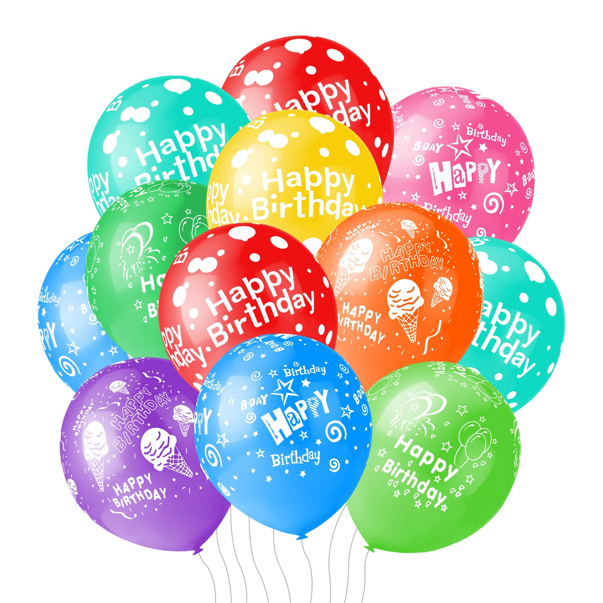
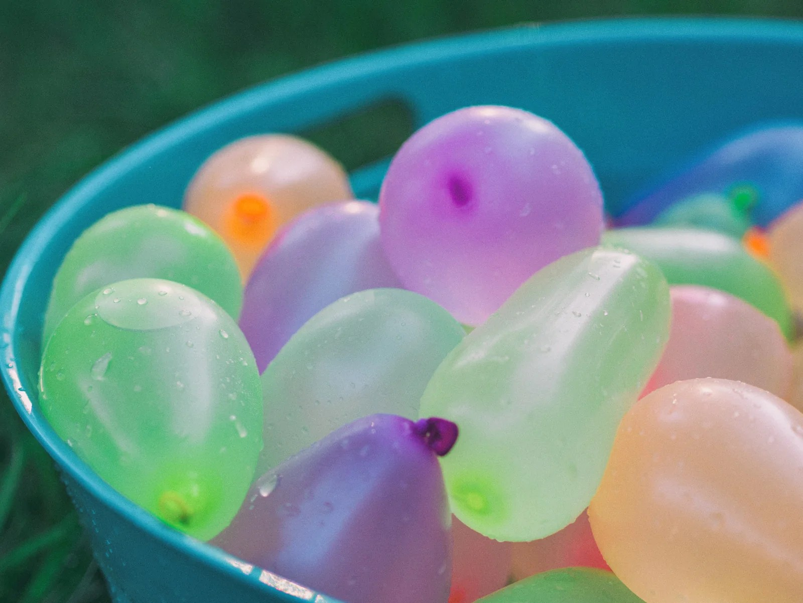

About
A balloon is a flexible membrane bag that can be inflated with a gas, such as helium, hydrogen, nitrous oxide, oxygen, or air. For special purposes, balloons can be filled with smoke, liquid water, granular media (e.g. sand, flour or rice), or light sources.

Party Balloons
Party balloons are mostly made of a natural latex tapped from rubber trees, and can be filled with air, helium, water, or any other suitable liquid or gas. The rubber's elasticity makes the volume adjustable.

Water Balloons
Water balloons are thin, small rubber balloons filled with a liquid, usually water, instead of a gas, and intended to be easily broken. They are usually used by children, who throw them at each other, trying to get each other wet, as a game, competition, or practical joke. By forcing water out the open end of a water balloon, it is possible to use it as a makeshift water gun.
Uses : Decoration
Balloons are used for decorating birthday parties, weddings, corporate functions, school events, and for other festive gatherings. The artists who use the round balloons to build are called "stackers" and the artists who use pencil balloons to build are called "twisters." Most commonly associated with helium balloon decor, more recently balloon decorators have been moving towards the creation of air-filled balloon decorations due to the non-renewable natural resource of helium limited in supply.